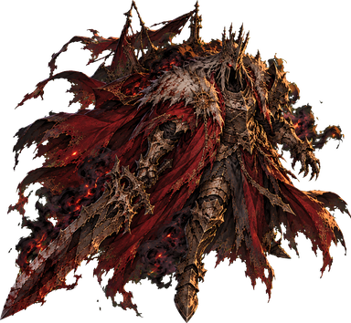

DÜŞMANLAR — POZLAR
Mevcut düşman görselleriyle CSS dönüşümü (ek kare yok). Dönüşüm merkezi ayak/ağırlık noktasıdır.
ÇÜRÜMÜŞ PİYADE — SÜRÜNEN YÜRÜYÜŞ (1,1 Hz)

yürüme · eğim +5° · −5 px · ±5 % squash
vurulma t=0 · parlama + 10 px geri + sx 1,12 / sy 0,88
ölüm 220 ms · çöküş sy 0,55 · sx 1,12 → kül
LEŞ KARGASI — UÇUŞ
çırpma 4 Hz · ±7 px salınım · yatış ±12°
hızlı kanat · hızlanınca sx 1,10 · yer gölgesi küçülür
ölüm 420 ms · düşüş 40 px · dönüş 80° · solar
ŞÖVALYE HAYALETİ — SÜZÜLME / ÖLÜM

süzülme 0,7 Hz · ±6 px · ±2,5° · yumuşak gölge
ağır vurulma · yalnız 4 px geri + parlama
ölüm 700 ms · yukarı akan kül, sy 1,15
KALE LORDU — ÖZEL ANLAR

çağırma ön hazırlığı 600 ms · sy 1,10 · −6° geri yaslanma · kor halkası
vuruş · sy 0,88 · sx 1,10 · şok halkası 360 px
ÖFKE · sy 1,15 ×2 nabız · tonu #E0584F · kor aurası